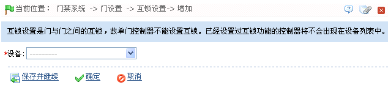
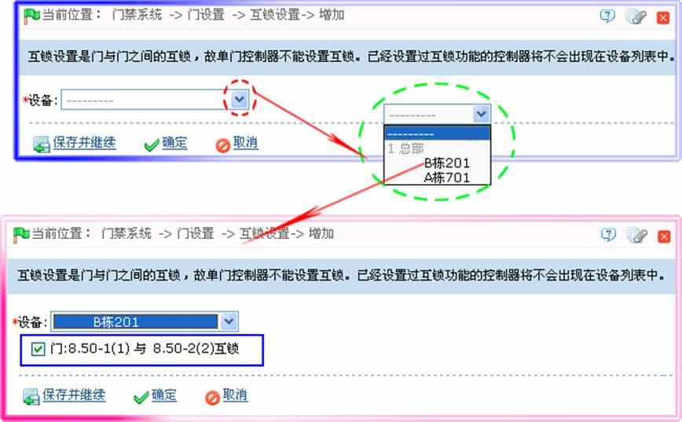
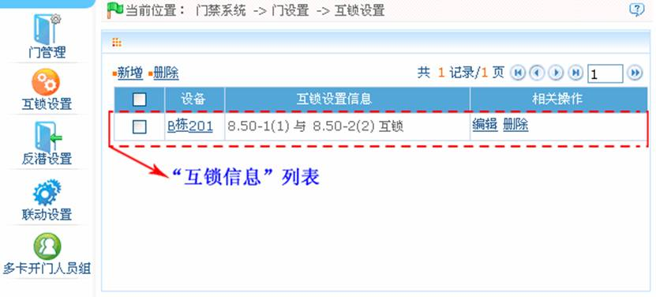

6.3.4 互锁设置
可设置一个控制器上的两个（多个）门之间的互锁管制，当其中一个门开启时，其他对应的门都关闭，当要开启一个门时，其他对应的门必须都是关闭的，否则无法开门。
设置互锁前请确保已经按照控制器《安装指南》连接好门磁，并在门管理中设置门磁状态为常开或者常闭。
-
 新增互锁设置
新增互锁设置
1、点击【门禁】 【门设置】
【门设置】 【互锁设置】
【互锁设置】 【新增】，进入新增互锁设置页面：
【新增】，进入新增互锁设置页面：

2、选择设备，显示互锁设置，然后选择互锁设置（门不重复的互锁设置，可多选），如下图所示：

 备注：因为一个设备只能对应一条互锁设置的记录，所以在新增时，在设备的下拉列表中时无法看到已经进行过互锁设置的设备。删除已设置的互锁信息，对应的设备将重新回到下拉列表中。设置界面因为所选设备控制的门数不同而不同：
备注：因为一个设备只能对应一条互锁设置的记录，所以在新增时，在设备的下拉列表中时无法看到已经进行过互锁设置的设备。删除已设置的互锁信息，对应的设备将重新回到下拉列表中。设置界面因为所选设备控制的门数不同而不同：
-
 单门控制器无互锁设置。
单门控制器无互锁设置。 -
双门控制器：1-2两门互锁设置。
-
四门控制器：1-2两门互锁、3-4两门互锁、1-2-3三门互锁、1-2-3-4四门互锁。
例如：选择1-2-3-4四门互锁，则要打开门3时，必须使门1、2、4都关闭。
3、设置完成后，单击【确定】按钮，保存设置并返回互锁设置页面，此时互锁设置列表中将显示刚新增的互锁设置，如下图所示：

-
编辑互锁设置
 注意：编辑时不能修改设备，只能修改互锁设置。
注意：编辑时不能修改设备，只能修改互锁设置。
1、在互锁设置页面的互锁设置列表中，单击互锁设置的“设备”，或单击互锁设置所在行的“相关操作”下对应的【编辑】按钮，进入编辑互锁设置页面。
2、根据需要修改互锁设置，然后单击【确定】按钮保存即可。
-
删除互锁设置
如果不需要再对该设备应用互锁设置，需将该条互锁设置记录删除。当删除某个设备记录时，如果其存在互锁设置记录，则会一并删除。具体操作方法如下：
1、在互锁设置页面的互锁设置列表中，单击选中需删除的互锁设置，然后单击互锁设置列表左上方的【删除】按钮，或直接单击互锁设置所在行的“相关操作”下对应的【删除】按钮，进入删除互锁设置的确认页面。
2、单击【确定】按钮，删除被选定的互锁设置。